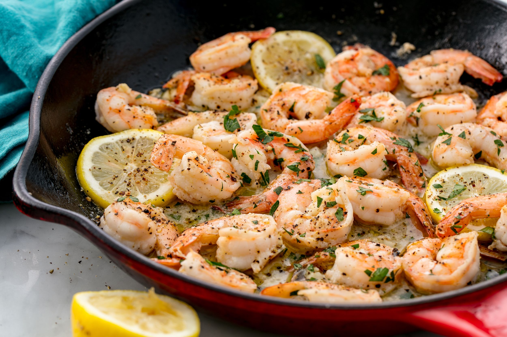

Lemon garlic shrimp

Lemon Garlic Shrimp ready to serve!
Ready to dive into a mouthwateringly tangy seafood dish? Try this top-rated lemon garlic shrimp recipe for a boldly savory taste of the sea any time.
Lemon juice, crushed red pepper, and fresh parsley infuse this shrimp dish with loads of zesty flavor that you're sure to love.
Make lemon garlic shrimp a part of your rotation for an incredibly easy and delicious dinner even when you're pressed for time.
- m1 tablespoon olive oil
- 16 large shrimp
- 3 large cloves garlic
- 1/2 teaspoon crushed red pepper flakes
- 2 teaspoons seafood seasonings
- salt and ground pepper
- lemon juice
- chopped fresh parsley
How to make lemon garlic shrimp steps by steps
- Heat oil in a large skillet over medium-low heat until warm, 2 to 3 minutes
- Add shrimp, garlic, and pepper flakes all at once and stir together
- Add seafood seasoning, salt, and black pepper and mix until combined
- Cook and stir until shrimp are bright pink on the outside and the meat is opaque, 3 to 5 minutes
- Reduce heat to low and stir in parsley, lemon juice, and lemon zest